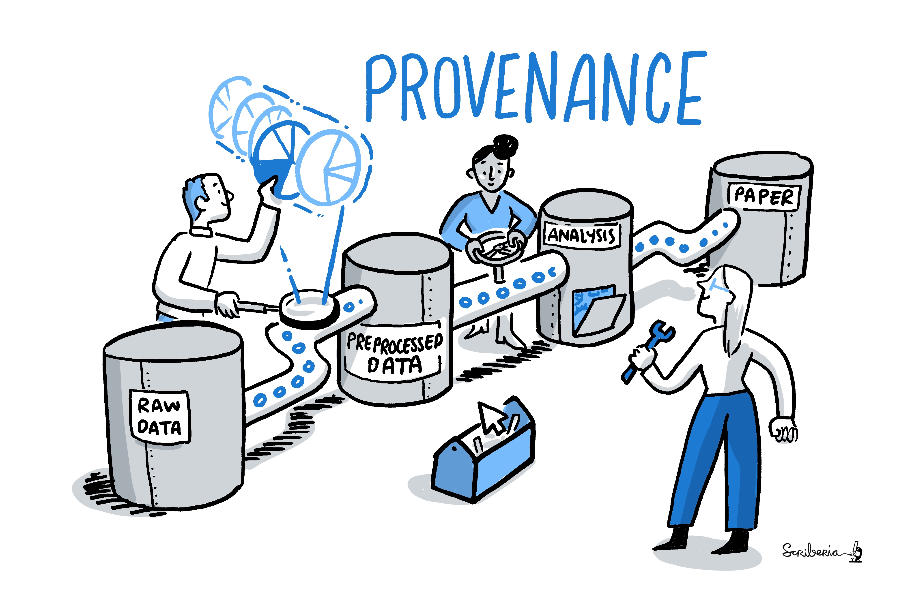
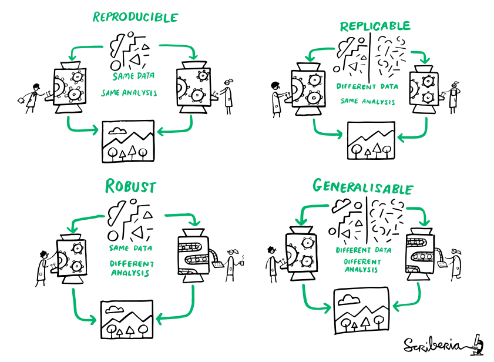

Concepts & principles for reproducible science
DataLad Datasets for data analysis
- A DataLad dataset can have any structure, and use as many or few features of a dataset as required.
- However, for data analyses it is beneficial to make use of DataLad features and structure datasets according to the YODA principles:

- P1: One thing, one dataset
- P2: Record where you got it from, and where it is now
- P3: Record what you did to it, and with what
Why Modularity?
- 1. Reuse and access management
- 2. Scalability

adina@bulk1 in /ds/hcp/super on git:master❱ datalad status --annex -r
15530572 annex'd files (77.9 TB recorded total size)
nothing to save, working tree cleanWhy Modularity?
- 3. Transparency
Original:
/dataset
├── sample1
│ └── a001.dat
├── sample2
│ └── a001.dat
...
Without modularity, after applied transform (preprocessing, analysis, ...):
/dataset
├── sample1
│ ├── ps34t.dat
│ └── a001.dat
├── sample2
│ ├── ps34t.dat
│ └── a001.dat
...
Why Modularity?
- 3. Transparency
Original:
/raw_dataset
├── sample1
│ └── a001.dat
├── sample2
│ └── a001.dat
...
/derived_dataset
├── sample1
│ └── ps34t.dat
├── sample2
│ └── ps34t.dat
├── ...
└── inputs
└── raw
├── sample1
│ └── a001.dat
├── sample2
│ └── a001.dat
...
Dataset linkage

$ datalad clone --dataset . http://example.com/ds inputs/rawdata
$ git diff HEAD~1
diff --git a/.gitmodules b/.gitmodules
new file mode 100644
index 0000000..c3370ba
--- /dev/null
+++ b/.gitmodules
@@ -0,0 +1,3 @@
+[submodule "inputs/rawdata"]
+ path = inputs/rawdata
+ url = http://example.com/importantds
diff --git a/inputs/rawdata b/inputs/rawdata
new file mode 160000
index 0000000..fabf852
--- /dev/null
+++ b/inputs/rawdata
@@ -0,0 +1 @@
+Subproject commit fabf8521130a13986bd6493cb33a70e580ce8572
Example dataset structure

Link precisely versioned inputs to version-controlled outputs
Sharing software environments: Why and how
Science has many different building blocks: Code, software, and data produce research outputs.
The more you share, the more likely can others reproduce your results
Sharing software environments: Why and how
- Software can be difficult or impossible to install (e.g. conflicts with existing software, or on HPC) for you or your collaborators
- Different software versions/operating systems can produce different results: Glatard et al., doi.org/10.3389/fninf.2015.00012
Software containers
- Software containers encapsulate a software environment and isolate it from a surrounding operating system. Two common solutions: Docker, Singularity
- How familiar are you with software containers?
Software containers
- Put simple, a cut-down virtual machine that is a portable and shareable bundle of software libraries and their dependencies
- Docker runs on all operating systems, but requires "sudo" (i.e., admin) privileges
- Singularity can run on computational clusters (no "sudo") but is not (well) on non-Linux
- Their containers are different, but interoperable - e.g., Singularity can use and build Docker Images

|
  |
The datalad-container extension
-
The
datalad-containerextension gives DataLad commands to add, track, retrieve, and execute Docker or Singularity containers.
pip/conda install datalad-container
Reproducible analysis: From DICOMs to brain masks
Sadly, handling containerized analysis on the JupyterHub isn't possible thus this is only a demonstration.The code can be found at github.com/datalad-handbook/course
- Step 1: Convert DICOMs to BIDS-structured NIfTI images
- Step 2: Publish the BIDS-structured NIfTI images
- Step 3: Reuse the NIfTI images in an analysis
Reproducible analysis: From DICOMs to brain masks
- Step 1: Convert DICOMs to BIDS-structured NIfTI images
# create a superdataset
$ datalad create -c text2git bids-data
[INFO ] Creating a new annex repo at /home/adina/bids-data
[INFO ] scanning for unlocked files (this may take some time)
[INFO ] Running procedure cfg_text2git
[INFO ] == Command start (output follows) =====
[INFO ] == Command exit (modification check follows) =====
create(ok): /home/adina/bids-data (dataset)
$ cd bids-data
# create a README
$ echo "# A BIDS structured dataset for my input data" > README.md
$ datalad status
untracked: README.md (file)
$ datalad save -m "Add a short README"
add(ok): README.md (file)
save(ok): . (dataset)
action summary:
add (ok: 1)
save (ok: 1)
# add the input data (DICOMs) as a subdataset
$ datalad clone --dataset . \
https://github.com/datalad/example-dicom-functional.git \
inputs/rawdata'
install(ok): inputs/rawdata (dataset)
add(ok): inputs/rawdata (file)
add(ok): .gitmodules (file)
save(ok): . (dataset)
add(ok): .gitmodules (file)
save(ok): . (dataset)
action summary:
add (ok: 3)
install (ok: 1)
save (ok: 2)Reproducible analysis: From DICOMs to brain masks
- Step 1: Convert DICOMs to BIDS-structured NIfTI images
$ datalad clone -d . \
https://github.com/ReproNim/containers.git \
code/containers
[INFO ] scanning for unlocked files (this may take some time)
[INFO ] Remote origin not usable by git-annex; setting annex-ignore
install(ok): code/containers (dataset)
add(ok): code/containers (file)
add(ok): .gitmodules (file)
save(ok): . (dataset)
add(ok): .gitmodules (file)
save(ok): . (dataset)
action summary:
add (ok: 3)
install (ok: 1)
save (ok: 2)
# list all available containers across the dataset hierarchy
$ datalad containers-list --recursive
[...]
code/containers/repronim-reproin -> code/containers/images/repronim/repronim-reproin--0.9.0.sing
[...]
# list the direct subdataset of bids-data
$ datalad subdatasets
subdataset(ok): code/containers (dataset)
subdataset(ok): inputs/rawdata (dataset)
# use datalad containers-run to run the conversion and save its provenance
$ datalad containers-run -m "Convert subject 02 to BIDS" \
--container-name code/containers/repronim-reproin \
--input inputs/rawdata/dicoms \
--output sub-02 \
"-f reproin -s 02 --bids -l "" --minmeta -o . --files inputs/rawdata/dicoms"
[...]
save(ok): . (dataset)
action summary:
add (ok: 18)
get (notneeded: 4, ok: 1)
save (notneeded: 2, ok: 1)
Reproducible analysis: From DICOMs to brain masks
- Step 1: Convert DICOMs to BIDS-structured NIfTI images
- Step 2: Publish the BIDS-structured NIfTI images
$ datalad siblings add -d . \
--name gin \
--url git@gin.g-node.org:/adswa/bids-data.git'
$ datalad siblings
.: here(+) [git]
[WARNING] Could not detect whether gin carries an annex. If gin is a pure Git remote, this is expected.
.: gin(-) [git@gin.g-node.org:/adswa/bids-data.git (git)]
$ datalad push --to gin
copy(ok): sourcedata/sub-02/func/sub-02_task-oneback_run-01_bold.dicom.tgz (file) [to gin...]
copy(ok): sub-02/func/sub-02_task-oneback_run-01_bold.nii.gz (file) [to gin...]
publish(ok): . (dataset) [refs/heads/git-annex->gin:refs/heads/git-annex 68523d8..b4c1ee0]
publish(ok): . (dataset) [refs/heads/master->gin:refs/heads/master [new branch]]
action summary:
copy (ok: 2)
publish (ok: 2)
Reproducible analysis: From DICOMs to brain masks
- Step 1: Convert DICOMs to BIDS-structured NIfTI images
- Step 2: Publish the BIDS-structured NIfTI images
- Step 3: Reuse the NIfTI images in an analysis
$ cd ../
# create a new dataset for your analysis. The yoda procedure pre-structures it
# and applies configurations that ensure that scripts are versioned in Git
$ datalad create -c yoda myanalysis
[INFO ] Creating a new annex repo at /home/adina/myanalysis
[INFO ] scanning for unlocked files (this may take some time)
[INFO ] Running procedure cfg_yoda
[INFO ] == Command start (output follows) =====
[INFO ] == Command exit (modification check follows) =====
create(ok): /home/adina/myanalysis (dataset)
$ cd myanalysis
$ tree
.
├── CHANGELOG.md
├── code
│ └── README.md
└── README.md
1 directory, 3 file
# add the BIDS-structured data as input - in the form of a subdataset
$ datalad clone -d . \
https://gin.g-node.org/adswa/bids-data \
input
[INFO ] scanning for unlocked files (this may take some time)
install(ok): input (dataset)
add(ok): input (file)
add(ok): .gitmodules (file)
save(ok): . (dataset)
add(ok): .gitmodules (file)
save(ok): . (dataset)
action summary:
add (ok: 3)
install (ok: 1)
save (ok: 2)Reproducible analysis: From DICOMs to brain masks
- Step 1: Convert DICOMs to BIDS-structured NIfTI images
- Step 2: Publish the BIDS-structured NIfTI images
- Step 3: Reuse the NIfTI images in an analysis
# Get a script for the analysis
$ datalad download-url -m "Download code for brain masking from Github" \
-O code/get_brainmask.py \
https://raw.githubusercontent.com/datalad-handbook/resources/master/get_brainmask.py'
[INFO ] Downloading 'https://raw.githubusercontent.com/datalad-handbook/...
https://raw.githubusercontent.com/datalad-handbook/resources/master/get_brainmask.py:
download_url(ok): /home/adina/myanalysis/code/get_brainmask.py (file)
add(ok): code/get_brainmask.py (file)
save(ok): . (dataset)
action summary:
add (ok: 1)
download_url (ok: 1)
save (ok: 1)
# Add a container with all relevant Python software
$ datalad containers-add nilearn \
--url shub://adswa/nilearn-container:latest \
--call-fmt "singularity exec {img} {cmd}"
[INFO ] Initiating special remote datalad
add(ok): .datalad/config (file)
save(ok): . (dataset)
containers_add(ok): /home/adina/myanalysis/.datalad/environments/nilearn/image (file)
action summary:
add (ok: 1)
containers_add (ok: 1)
save (ok: 1)
# run your containerized analysis reproducibly
$ datalad containers-run -m "Compute brain mask" \
-n nilearn \
--input input/sub-02/func/sub-02_task-oneback_run-01_bold.nii.gz \
--output figures/ \
--output "sub-02*" \
"python code/get_brainmask.py"'
[INFO ] Making sure inputs are available (this may take some time)
get(ok): input/sub-02/func/sub-02_task-oneback_run-01_bold.nii.gz (file) [from origin...]
[INFO ] == Command start (output follows) =====
[INFO ] == Command exit (modification check follows) =====
add(ok): figures/sub-02_brainmask.png (file)
add(ok): figures/sub-02_mean-epi.png (file)
add(ok): sub-02_brain-mask.nii.gz (file)
save(ok): . (dataset)
action summary:
add (ok: 3)
get (notneeded: 2, ok: 1)
save (notneeded: 1, ok: 1)Reproducible analysis: From DICOMs to brain masks
- Step 1: Convert DICOMs to BIDS-structured NIfTI images
- Step 2: Publish the BIDS-structured NIfTI images
- Step 3: Reuse the NIfTI images in an analysis
# Ask your results how they came to be
$ git log sub-02_brain-mask.nii.gz
commit d2d35eb31a93a0a82163835de0e3c14946504811 (HEAD -> master)
Author: Adina Wagner
Date: Wed Apr 20 16:05:40 2022 +0200
[DATALAD RUNCMD] Compute brain mask
=== Do not change lines below ===
{
"chain": [],
"cmd": "singularity exec .datalad/environments/nilearn/image python code/get_brainmask.py",
"dsid": "421d677c-2873-49f0-a1a9-9c7bb0100e69",
"exit": 0,
"extra_inputs": [
".datalad/environments/nilearn/image"
],
"inputs": [
"input/sub-02/func/sub-02_task-oneback_run-01_bold.nii.gz"
],
"outputs": [
"figures/",
"sub-02*"
],
"pwd": "."
}
^^^ Do not change lines above ^^^
# ... or recompute them
$ datalad rerun
Summary - Reproducible analysis
datalad runrecords a command and its impact on the dataset.- Data/directories specified as
--inputare retrieved prior to command execution, Data/directories specified as--outputwill be unlocked for modifications prior to a rerun of the command. datalad containers-runfrom the datalad-container extendsdatalad run& can be used to capture the software environment as provenance.- Its ensures computations are ran in the desired software set up and supports Docker and Singularity containers
- Modular dataset hierarchies ensure transparency, easier access management, and reusability
- To install a dataset into an existing dataset as a subdataset, use datalad clone -d . [URL]
- The YODA procedure pre-structures and configures datasets in a way that aids reproducibility
- datalad create -c yoda newdataset applies it directory during creation
General reproducibility checklist (Hinsen, 2020)
https://www.nature.com/articles/d41586-020-02462-7- Use code/scripts
- Document
- Record
- Test
- Guide
-
Workflows based on point-and-click interfaces (e.g. Excel), are
not reproducible. Enshrine computations and data manipulation in code.
-
Use comments, computational notebooks and README files to explain
how your code works, and to define the expected parameters and the
computational environment required.
-
Make a note of key parameters, e.g. ‘seed’ values used to start a
random-number generator.
-
Create a suite of test functions. Use positive and negative control
data sets to ensure you get the expected results, and run those tests
throughout development to squash bugs as they arise.
-
Create a master script (for example, a ‘run.sh’ file or a Makefile) that downloads
required data sets and variables, executes your workflow and provides
an obvious entry point to the code.
General reproducibility checklist (Hinsen, 2020)
https://www.nature.com/articles/d41586-020-02462-7- Archive
- Track
- Package
- Automate
- Simplify
- Verify
-
GitHub is a popular but impermanent online repository. Archiving
services such as Zenodo, Figshare and Software Heritage promise
long-term stability.
-
Use version-control tools such as Git to record your project’s history.
Note which version you used to create each result.
-
Create ready-to-use computational environments using containerization
tools (for example, Docker, Singularity), web services (Code Ocean,
Gigantum, Binder) or virtual-environment managers (Conda).
-
Use continuous-integration services (for example, Travis CI) to
automatically test your code over time, and in various computational environments
-
Avoid niche or hard-to-install third-party code libraries that can complicate reuse.
-
Check your code’s portability by running it in a range of computing environments.
Did you know...
- Use code/scripts
- First: YES! Very much so!
- But if your workflow includes interactive
code sessions, and you want to at least save the results, you could do
datalad run ipython/R/matlab/... - Once you close the interactive session, every result you created would be saved (although with crappy provenance)
-
Workflows based on point-and-click interfaces (e.g. Excel), are
not reproducible. Enshrine computations and data manipulation in code.
Did you know...
- Document
- Record
- Commit messages and run records can do this for you, and are a useful basis to extend upon with "documentation for humans" such as READMEs
- If you create datasets using datalad create -c yoda ... the YODA procedure automatically populates your repository with README files to nudge you into using them (and makes sure that code is versioned with Git).
-
Use comments, computational notebooks and README files to explain
how your code works, and to define the expected parameters and the
computational environment required.
-
Make a note of key parameters, e.g. ‘seed’ values used to start a
random-number generator.
Did you know...
- Test
- There is an excellent Turing Way chapter about it
- Because annexed files are stored by their content identity hash, if any change in your pipeline/workflow produces a changed results, the version control software will be able to tell you
-
Create a suite of test functions. Use positive and negative control
data sets to ensure you get the expected results, and run those tests
throughout development to squash bugs as they arise.
Did you know...
- Guide
- A well-made run record can do this, or at least help
- Makefiles are also great. A tutorial for a reproducible paper using Makefiles is in github.com/datalad-handbook/repro-paper-sketch/
-
Create a master script (for example, a ‘run.sh’ file) that downloads
required data sets and variables, executes your workflow and provides
an obvious entry point to the code.
Did you know...
- Archive
-
Archiving services such as Zenodo, Figshare and Software Heritage promise
long-term stability.
You can archive a dataset to figshare?
If you have a Figshare account, you can do the following:
$ datalad export-to-figshare
[INFO ] Exporting current tree as an archive under /tmp/comics since figshare does not support directories
[INFO ] Uploading /tmp/comics/datalad_ce82ff1f-e2b3-4a84-9e56-87d8eb6e5b27.zip to figshare
Article
Would you like to create a new article to upload to? If not - we will list existing articles (choices: yes, no): yes
New article
Please enter the title (must be at least 3 characters long). [comics#ce82ff1f-e2b3-4a84-9e56-87d8eb6e5b27]: acomictest
[INFO ] Created a new (private) article 13247186 at https://figshare.com/account/articles/13247186. Please visit it, enter additional meta-data and make public
[INFO ] 'Registering' /tmp/comics/datalad_ce82ff1f-e2b3-4a84-9e56-87d8eb6e5b27.zip within annex
[INFO ] Adding URL https://ndownloader.figshare.com/files/25509824 for it
[INFO ] Registering links back for the content of the archive
[INFO ] Adding content of the archive /tmp/comics/datalad_ce82ff1f-e2b3-4a84-9e56-87d8eb6e5b27.zip into annex AnnexRepo(/tmp/comics)
[INFO ] Initiating special remote datalad-archives
[INFO ] Finished adding /tmp/comics/datalad_ce82ff1f-e2b3-4a84-9e56-87d8eb6e5b27.zip: Files processed: 4, removed: 4, +git: 2, +annex: 2
[INFO ] Removing generated and now registered in annex archive
export_to_figshare(ok): Dataset(/tmp/comics) [Published archive https://ndownloader.figshare.com/files/25509824]
Did you know ...

Did you know...
- Package
-
The
datalad-containerextension can help to use and share software environments in your dataset - github.com/repronim/containers is a public DataLad dataset with access to dozens of commonly used containerized neuroimaging software
-
Create ready-to-use computational environments using containerization
tools (for example, Docker, Singularity), web services (Code Ocean,
Gigantum, Binder) or virtual-environment managers (Conda).
Did you know...
-
Helpful resources for working with software containers:
- repo2docker can fetch a Git repository/DataLad dataset and builds a container image from configuration files
- neurodocker can generate custom Dockerfiles and Singularity recipes for neuroimaging.
- The ReproNim container collection, a DataLad dataset that includes common neuroimaging software as configured singularity containers.
- rocker - Docker container for R users
Summary
Where can DataLad help?|

|
|
Questions!
Adding a Singularity Image from a path
- You can get Singularity images by "pulling" them from Singularity or Dockerhub:
$ singularity pull docker://nipy/heudiconv:0.5.4
$ singularity pull shub://adswa/python-ml:1
INFO: Downloading shub image
265.56 MiB / 265.56 MiB [==================================================] 100.00% 10.23 MiB/s 25s$ sudo singularity build myimage Singularity.2
INFO: Starting build...
Getting image source signatures
Copying blob 831751213a61 done
[...]
INFO: Creating SIF file...
INFO: Build complete: myimage
$ ls
heudiconv_0.5.4.sif
python-ml_1.sif$ datalad containers-add software --url /home/me/singularity/myimage
[INFO ] Copying local file myimage to /home/adina/repos/resources/.datalad/environments/software/image
add(ok): .datalad/environments/software/image (file)
add(ok): .datalad/config (file)
save(ok): . (dataset)
containers_add(ok): /home/adina/repos/resources/.datalad/environments/software/image (file)
action summary:
add (ok: 2)
containers_add (ok: 1)
save (ok: 1)
$ datalad containers-list
software -> .datalad/environments/software/imageAdding a Singularity Image from a URL
- Tip: If you add Images from public URLs (e.g., Dockerhub or Singularity Hub), others can retrieve your Image easily
$ datalad containers-add software --url shub://adswa/python-ml:1
add(ok): .datalad/config (file)
save(ok): . (dataset)
containers_add(ok): /tmp/bla/.datalad/environments/software/image (file)
action summary:
add (ok: 1)
containers_add (ok: 1)
save (ok: 1)
Adding a Docker Image from a path
- You can get Docker images by "pulling" them from Dockerhub:
$ docker pull repronim/neurodocker:latest 1 !
latest: Pulling from repronim/neurodocker$ sudo docker build -t adwagner/somedockercontainer .
Sending build context to Docker daemon 6.656kB
Step 1/4 : FROM python:3.6
[...]
Successfully built 31d6acc37184
Successfully tagged adwagner/somedockercontainer:latest
$ docker images
REPOSITORY TAG IMAGE ID CREATED SIZE
repronim/neurodocker latest 84b9023f0019 7 months ago 81.5MB
adwagner/min_preproc latest fca4a144b61f 8 months ago 5.96GB
[...]Adding a Docker image from a URL
-
$ datalad containers-add --url dhub://busybox:1.30 bb [INFO] Saved busybox:1.30 to C:\Users\datalad\testing\blablablabla\.datalad\environments\bb\image add(ok): .datalad\environments\bb\image\64f5d945efcc0f39ab11b3cd4ba403cc9fefe1fa3613123ca016cf3708e8cafb.json (file) add(ok): .datalad\environments\bb\image\a57c26390d4b78fd575fac72ed31f16a7a2fa3ebdccae4598513e8964dace9b2\VERSION (file) add(ok): .datalad\environments\bb\image\a57c26390d4b78fd575fac72ed31f16a7a2fa3ebdccae4598513e8964dace9b2\json (file) add(ok): .datalad\environments\bb\image\a57c26390d4b78fd575fac72ed31f16a7a2fa3ebdccae4598513e8964dace9b2\layer.tar (file) add(ok): .datalad\environments\bb\image\manifest.json (file) add(ok): .datalad\environments\bb\image\repositories (file) add(ok): .datalad\config (file) save(ok): . (dataset) containers_add(ok): C:\Users\datalad\testing\blablablabla\.datalad\environments\bb\image (file) action summary: add (ok: 7) containers_add (ok: 1) save (ok: 1)
Configure containers
-
datalad containers-runexecutes any command inside of the specified container. How does it work?
$ cat .datalad/config
[datalad "containers.midterm-software"]
updateurl = shub://adswa/resources:1
image = .datalad/environments/midterm-software/image
cmdexec = singularity exec {img} {cmd}$ datalad containers-add fmriprep \
--url shub://ReproNim/containers:bids-fmriprep--20.1.1 \
--call-fmt 'singurity run --cleanenv -B $PWD,$PWD/.tools/license.txt {img} {cmd}'workflow demonstration fMRIprep: OHBM 2020 Open Science Room presentation